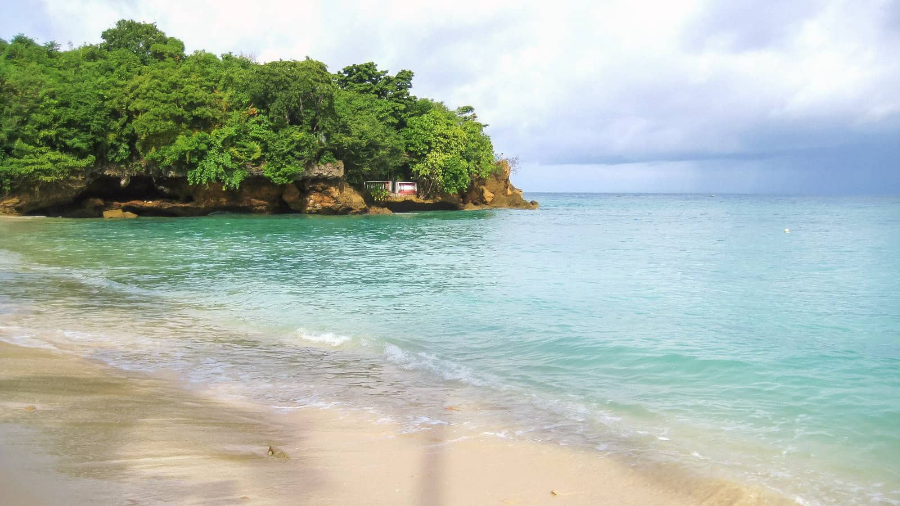
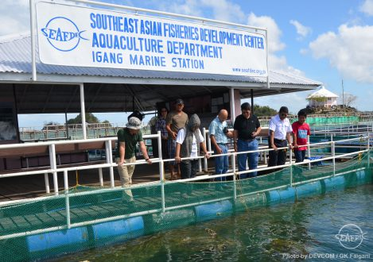
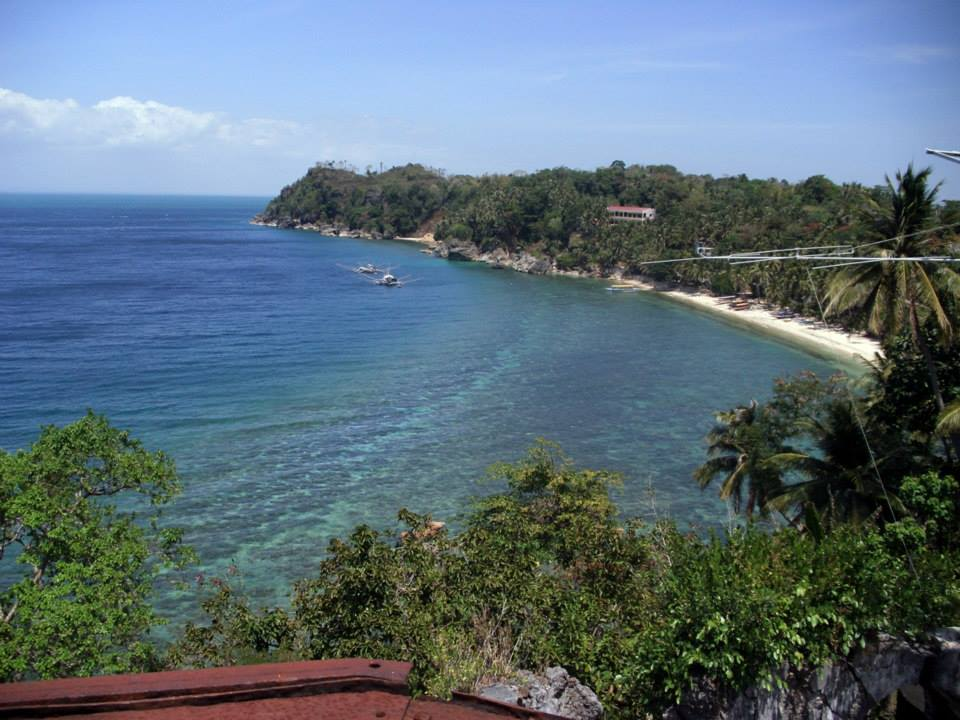
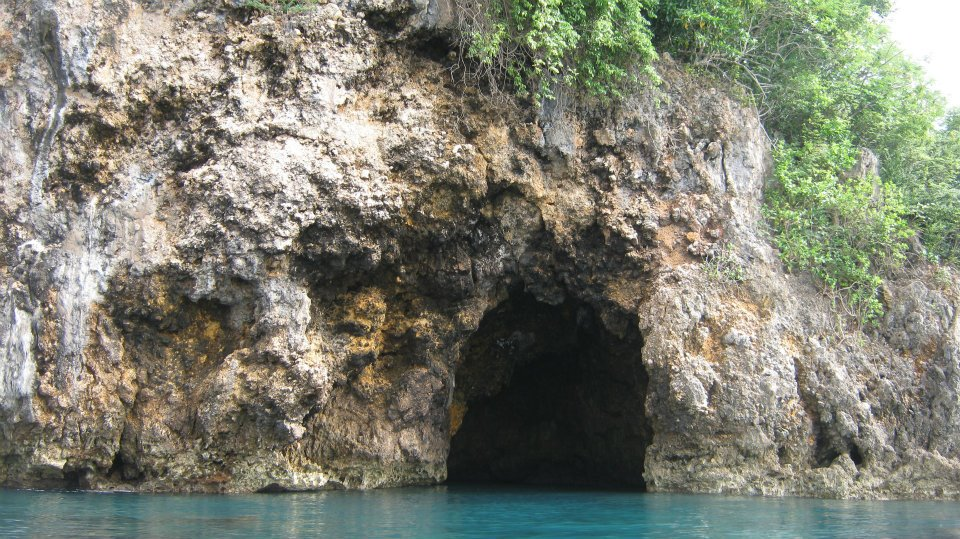

Never underestimate what Guimaras Island’s tourist spots can offer you. This destination filled with around 50,000 mango trees isn’t just only about the high-quality sweet mangoes, but also about its uncrowded islands and beaches that can bring you your best vacation ever. You can visit Guimaras via ferry from its neighbors in the Visayas region: Iloilo, Negros Occidental, and Cebu. If you’re going to join some of the island hopping tours, expect to spend around 400 PHP (8 USD) for a boat good for 6 people. If you want to roam around the island on your own without the troubles of waiting for a jeepney, you can rent a motorbike or a tricycle.
Iloilo has some of the best beaches. With so many hidden gems, it is truly a treat for both the locals and tourists. The island of Guimaras, specifically, is often recommended to travelers who visit Iloilo City as it’s just a 15-minute ferry ride from the city port. Most would often think that a day is enough to see what the island offers, especially if their primary goal is to get their hands on the popularly luscious mangoes of the island. However, Guimaras isn’t only a day trip escape from the city. It is an island that has more stories to offer, - it even has some of the most interesting things to offer, especially during the Lenten season. Just be sure you’re willing to get to know it better for more than a day.
Traveling – it leaves you speechless,
then turns you into a storyteller
- Take breathtaking photos above Guisi Beach
- Swim in Buho Ramirez Cave
- Spend tour hiking breaks at Ambakan Falls
- Learn more about the protected marine life at Taklong Island National Marine Reserve
- Laze under the sun at Alubihod Beach
-
Alubihod Beach is the most popular beach on the island, but its beauty remains flawless. Its red-tinted pebbles mixing in with the white sand gives the beach a pinkish hue blending with the clear blue sea. You can mark the beach as your starting point for your island hopping tour where you can visit other attractions including Ave Maria Beach and Buho Ramirez Cave.

- Study the different fish species at SEAFDEC
The Southeast Asian Fisheries Development Center is a research center where they breed and study different fish species. This place is best for those who want an educational tour about marine life and aquaculture. You can get to know its inhabitants such as the clownfish, milkfish, Giant grouper, sea urchins, and more. This property also has research labs, hatcheries, broodstock tanks, and an aquarium museum.

It’s easy to find Guisi Beach, just head to the Guisi Lighthouse attraction and there you are - a few steps away from the beach, beautifully surrounded by limestone rock formations. Grab your snorkeling gear as you shouldn’t miss the rich marine life around its clear waters. Don’t also forget about the fantastic views from the nearby rock cliff.

Also called Baras Cave, Buho Ramirez Cave is decorated by rock formations and hundreds of fruit bats. Depending on the tide, visitors can either walk around the rocks or take a dip in its clear waters. This is often included in the island hopping tours offered in Jordan.

Ambakan Falls in Guimaras is a great swimming treat after hiking through its muddy trail. It is located 3 kilometers (1.8 miles) away from Jordan Wharf and is the perfect location to snap some beautiful photographs!
Discover nature’s well-kept marine treasures protected by the local government in Takong Island National Marine Reserve. Here, you can witness the powdery beach, mangroves, corals, and different kinds of fish all in one site. Don’t think you can’t swim here because it’s a marine reserve! Go ahead and jump in one of the clearest waters you’ll see, it’s truly one of the best places to visit in Guimaras.